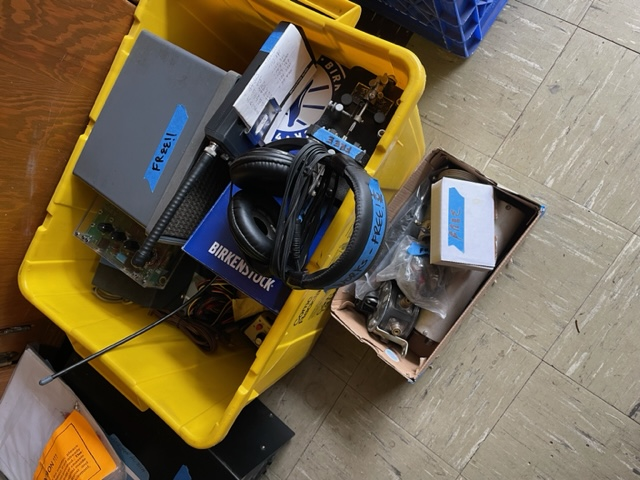
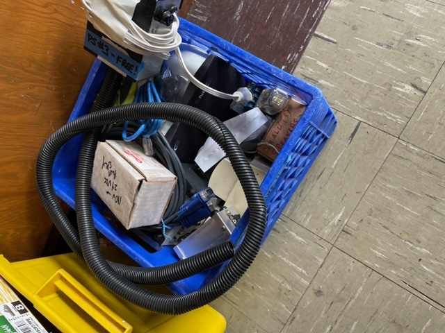
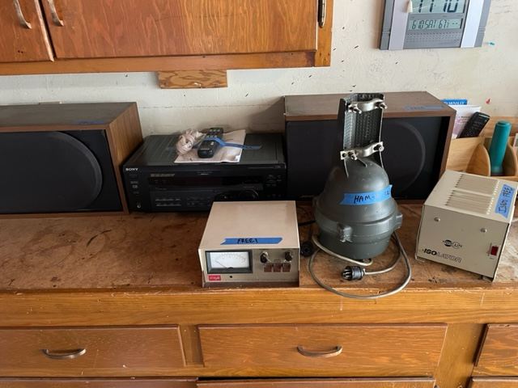
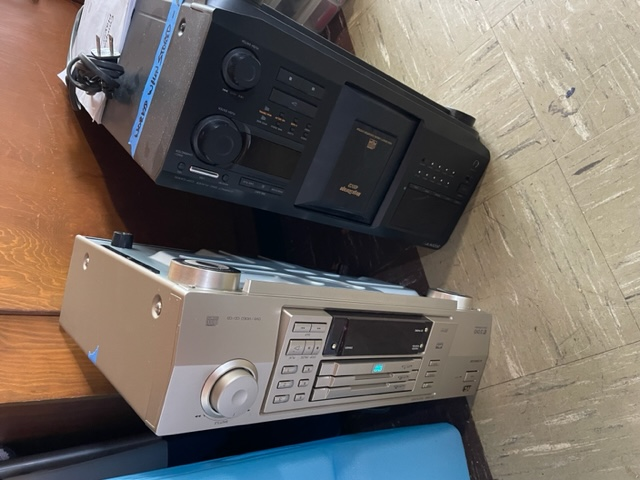
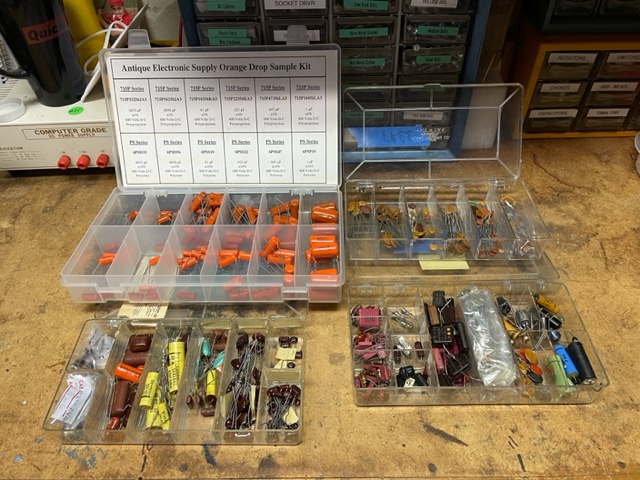
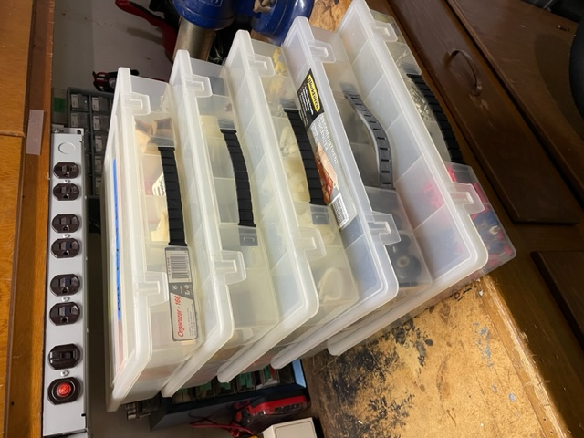
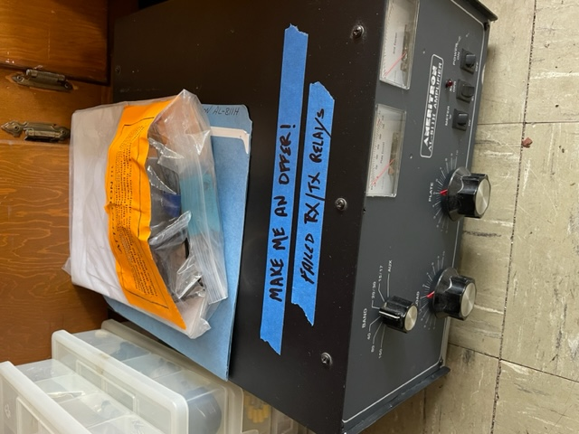

Hello Radio Amateur Friends, After 55 years of Amateur Radio, I find that I have just too many things that I once had a use for, enjoyed using back then, and now want to see them find a new QTH. My wife would very much like this to happen as well. To that end, I’m announcing K6MKF's Downsizing Driveway Giveaway which will be held: On Saturday, June 17, 2023 at 1:30PM (2030Z) at my QRZ.COM address. We will roll up the garage door and bring our offerings out onto the driveway promptly at 1:30PM. Here are some of the items that will be available:  In the yellow bin and box (we’re keeping the yellow bin) are a Heil headset, an old Speed-X bug, an old Hammarlund speaker, an Elecraft AF-1 audio filter, a couple hundred music CDs and various other pieces parts, gadgets, and gizmos.  In the blue crate (we’re keeping the blue crate) there are some cables, 2 pairs of powered computer speakers, and other pieces parts, gadgets, and gizmos.  A Sony FM receiver and two Bose speakers of 1980s vintage (all works), a Ham-IV rotator and controller (not working and needs repaired/rebuild) and a Tripp-Lite Isolation transformer.  A Sony 400 Disc CD Changer and a video DVD player (both worked when stored some years ago).  Four plastic organizers of capacitors. If you need some capacitance, we’ve got you covered!!  Five plastic organizers filled with various connectors, nobs, tubes, and pieces parts. Take any or all and the organizers as well. ======================================================================================================= There is one item that I will entertain cash offers for: An Ameritron AL-811H RF Amp, which needs work on the RX/TX relays. I tried replacing the relays without success. If I get a decent offer, I’ll let it go, otherwise I’ll hold on to it as a “project” amp and send it off for repairs.  ======================================================================================================= We look forward to seeing you at K6MKF's Downsizing Driveway Giveaway, and we look forward to moving these ‘treasures’ on to their new QTH. - 73 and good DX de Mike, K6MKF, NCDXC Life Member |